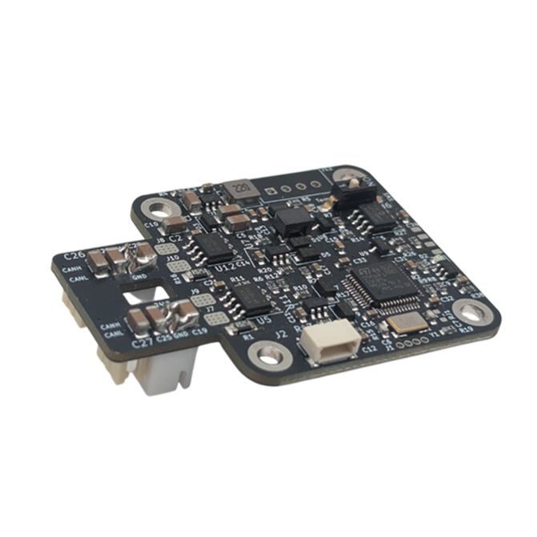
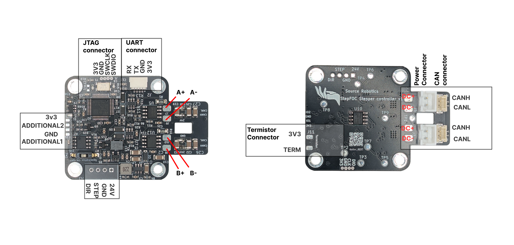
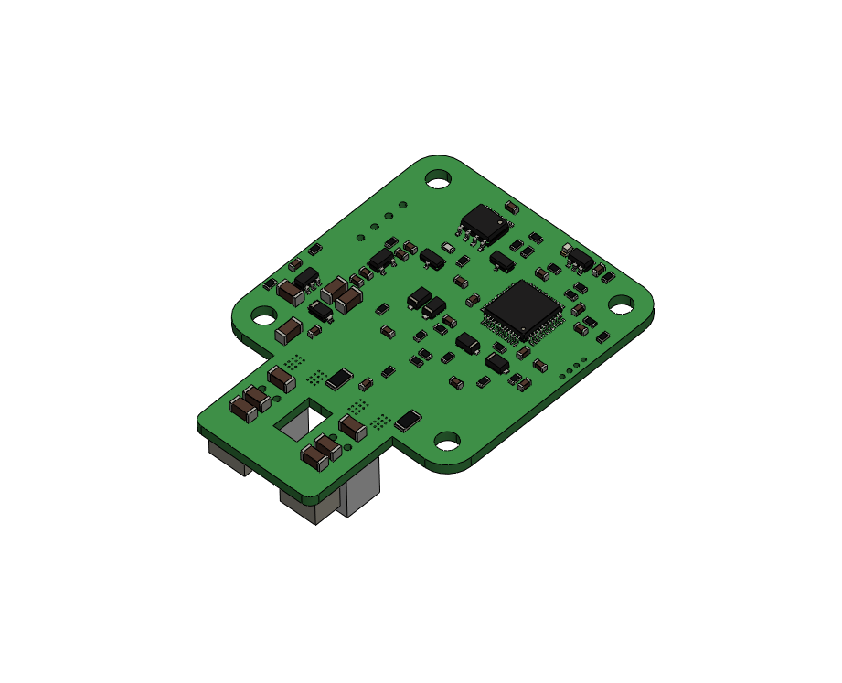
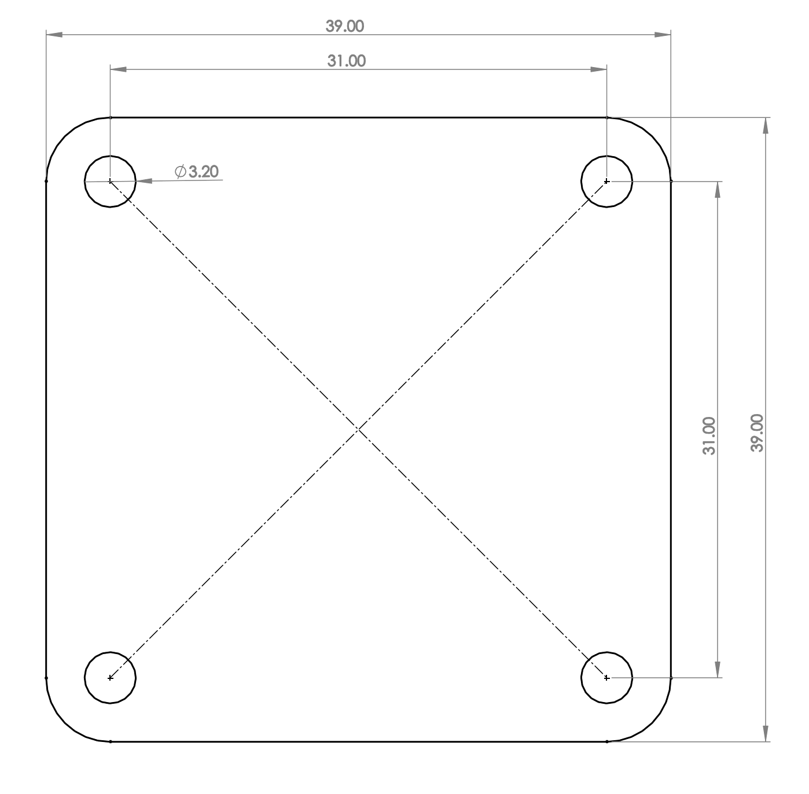
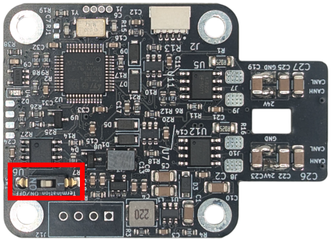

STEPFOC datasheet
Spectral micro BLDC driver and STEPFOC driver
STEPFOC stepper driver is built on the same hardware and software foundation as the Spectral Micro BLDC driver. As a result, some references or images in this documentation may still show the Spectral Micro, since both drivers share about 99% of their features. They also use the same CAN and UART command sets, with only minor differences in UART-based calibration and setup procedures.
STEPFOC is a FOC based stepper motor controller designed to deliver affordable, high-performance hardware paired with powerful open-source software. Its mission is to transform low-cost stepper motors into high-performance robotic servos, enabling advanced robotics applications without the high price tag.
The controller features a 14-bit magnetic encoder, inline current sensing, CAN and UART interfaces, and supports position, velocity, torque, and impedance control modes — everything you need to build precise and capable robotic systems.
Optimized for NEMA17 stepper motors, STEPFOC provides a complete solution for robotics development.
| Features | |
|---|---|
 |
Electrical specs - Stepper motor FOC controller - Voltage input: 12 - 29V - Max continuous phase current: 2.8A - Max phase current: 2.8A (with good colling) - Inline current sensing - PWM switching rate: 25 kHz - Max power: 80W - Idle power: 0.3W - Control loop frequency: 6250Hz - Max electrical frequency: 460 Hz Mechanical specs - Mass: 8 g - Dimensions: 39mm x 39mm - Nema 17 compatible mounting hole distances Features - STM32f103c microcontroller - 14 bit encoder - CAN and UART communication - Daisy chain CAN and power connector - EEPROM memory 16 Kbit - Hardware overcurrent, over-under voltage and temperature protection - Fully open source firmware and support for SimpleFOC - One additional pin for hall sennsor - Temperature sensor connector - Torque, velocity, position, and Impedance control modes - Auto calibration features - Connector for step / dir interface |
Each STEPFOC Stepper controller is Fully end of line tested.
Absolute maximum ratings
- Supply voltage -> min 12V, typ 24V, max 29V
- Phase current -> typ 1.5A, max 2.5A wiht good cooling and in small bursts
- Operating Temperature -> min -20°C, typ 25°C, max 130°C
Connectors
| Connector | Cable assembly | Connector datasheet |
|---|---|---|
| UART | Link | JST SH series |
| Power | Link | JST XH series |
| CAN | Link | JST ZH series |
| JTAG | Link | 1.27 pitch pin header |
Pinout
REVERSING POLARITIY ON DC+- WILL DESTROY YOUR BOARD.
Motor phases are conneceted to U,V and W. Power is connected to DC+ and DC-

Note!
- termistor pin is using pulldown of 54.9 kilo ohms.
- UART is 3v3 only. Using 5V will destroy the board.
- "ADDITIONAL2" can be used as analog input or general purpose input/output
CAD and dimensions
You can download Spectral micro STEP files here!

STEPFOC uses same hole spacing as NEMA17 format motors.
Magnetic encoder is located exactly at the middle of the board!

CAN termination
To use CAN termination make sure to place the swith in ON position!

Pre loaded firmware
STEPFOC comes preloaded with STEPFOC firmware. You can check what release by using UART interface and calling the command: #Info
Default settings that come prelaoded are:
- LED indication: 1
- Calibrated: 0
- Using termistor: 0
- Watchdog active: 0
- Heartbeat active: 0
- UART baud rate: 256000
- CAN baud rate: 1000000
- Default CAN node ID: 0
-
I AM GRIPPER: 0
-
Pole pair: 0
- Resistance: 0
- Inductance: 0